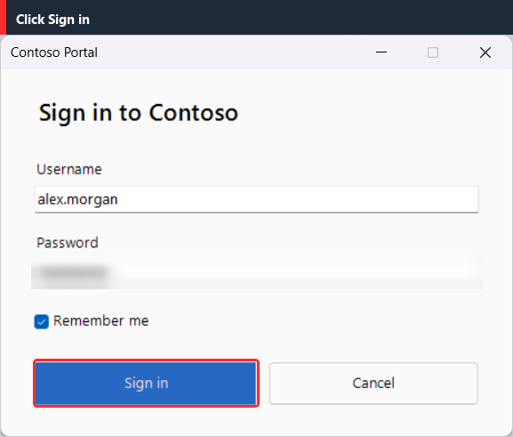
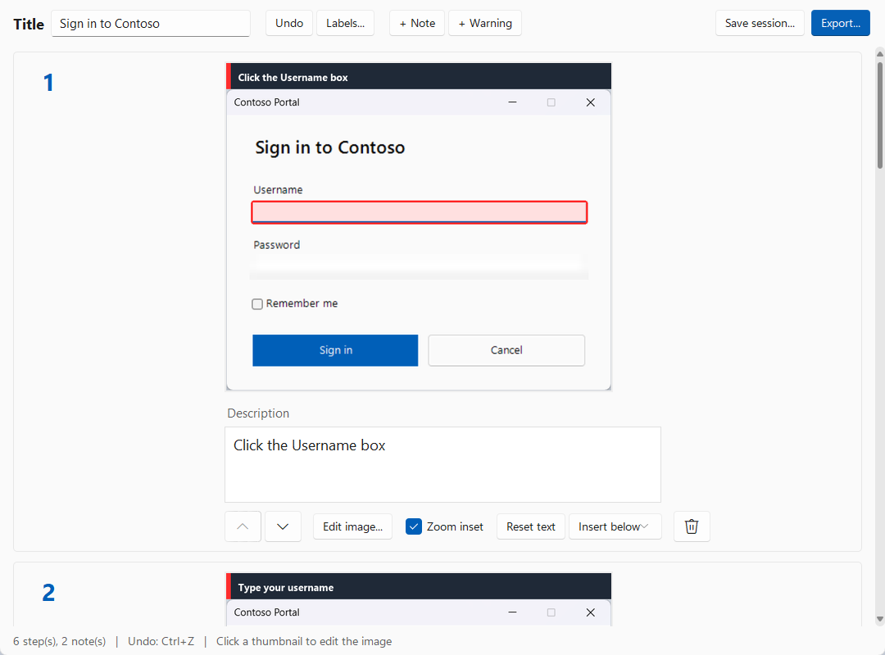
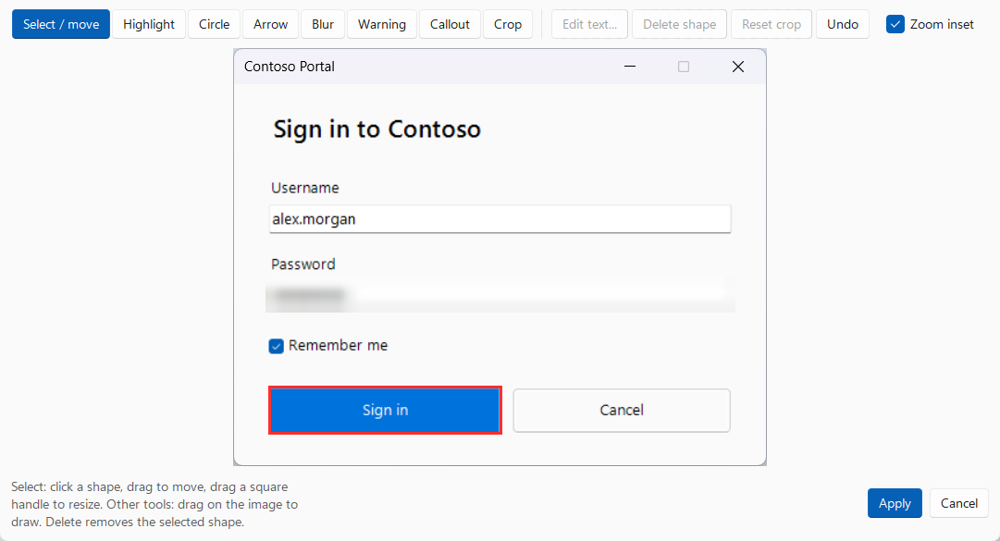
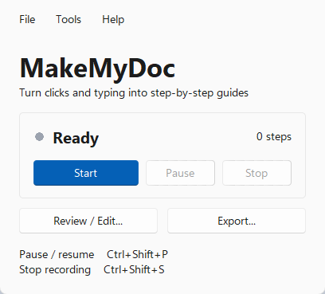

Turn what you do on screen into a step-by-step guide.
Press Start, do your task, press Stop. MakeMyDoc records your clicks and typing, screenshots the window, highlights what you clicked and exports a clean guide as PDF, Markdown or HTML.
No account. No cloud. Everything stays on your PC.

Record once. Share a polished guide.
Documenting a process should not take longer than doing it.
Record
Click Start and work as usual. Every click and every group of typed text becomes a step, with a screenshot of the active window. Pause or stop with a hotkey or the small REC badge.
Review and edit
See every step as a card. Fix the wording, reorder, delete, crop, draw arrows, blur anything sensitive, and add notes or warnings wherever you need them.
Export
Save a PDF, a Markdown file for GitHub, or a single self-contained HTML page. Steps are numbered automatically and each one is a screenshot with its description on top.
Everything a good how-to needs
Small, fast, and built for the boring part of documentation.
Clicks and typing, captured
Left, right and double clicks, plus typed text grouped into one step between clicks. Shortcuts like Ctrl+S are recorded too.
Active-window screenshots
Only the window you are working in, not your whole desktop. Menus and drop-downs that stick out of the window are included.
Highlights what you clicked
Uses Windows UI Automation to find the element's name and outline, so the text reads "Left click on: Save" and the button is highlighted.
Zoom inset
A magnified crop of the clicked area sits beside or below the screenshot, so small buttons are easy to spot.
Passwords protected
Password fields are detected and blurred before the screenshot is saved, and what you type into them is never stored.
A real editor
Crop, highlight, circle, arrow, blur, warning marks and callouts, plus notes and warnings between steps. Undo as many steps as you need.
PDF, Markdown, HTML
Title page, numbered steps, and GitHub-friendly Markdown. The HTML export is one file you can email.
Your wording, once
Change "Left click on:" a single time and every step follows. Edit any single description by hand whenever you like.
Private by design
No account, no cloud, no tracking. Your recordings never leave your computer unless you share the exported file.
A modern Windows 11 look
Light or dark to match your system, with a title bar that blends in.



Get it
Two ways to run MakeMyDoc.
Download the app
Grab MakeMyDoc.exe from the latest release and run it. No installer, no Python needed.
The app is not code-signed, so Windows SmartScreen may warn on first run: choose More info, then Run anyway.
Run from source
Needs Python 3.11 or newer.
git clone <repo-url> MakeMyDoc cd MakeMyDoc python -m venv .venv .venv\Scripts\activate pip install -r requirements.txt python run.py
Questions
Is it really free?
Yes. MakeMyDoc is open source under the MIT license: free to use, change and share.
Does anything get uploaded?
No. Recording, editing and exporting all happen on your computer. There is no account and the app makes no network requests.
How are passwords handled?
Password fields are found through Windows UI Automation and blurred before the screenshot is written to disk. Characters typed into them are never stored; the step just says the text is hidden. A few custom-drawn password boxes are not exposed to Windows, so blur those yourself with the Blur tool in the editor.
Can it record apps that run as administrator?
Windows blocks a normal program from seeing an elevated app. MakeMyDoc detects this and warns you; use Tools > Restart as administrator and it can record them.
Which hotkeys are there?
Ctrl+Shift+P pauses or resumes, Ctrl+Shift+S stops. You can change both in the settings. The clicks you make on MakeMyDoc's own buttons are never recorded.
Which Windows versions work?
MakeMyDoc is built and tested on Windows 11. Windows 10 should work too, but it has not been tested there, and the rounded title bars are a Windows 11 feature.